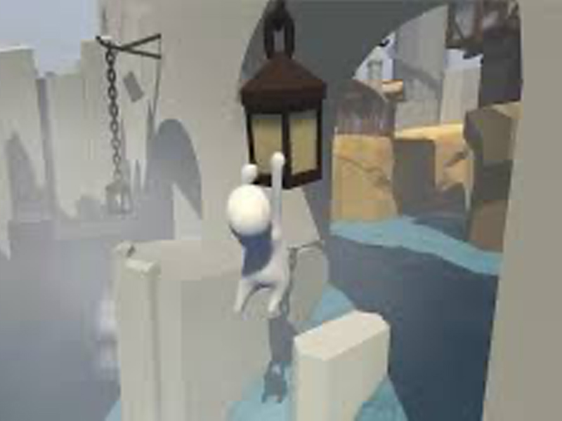
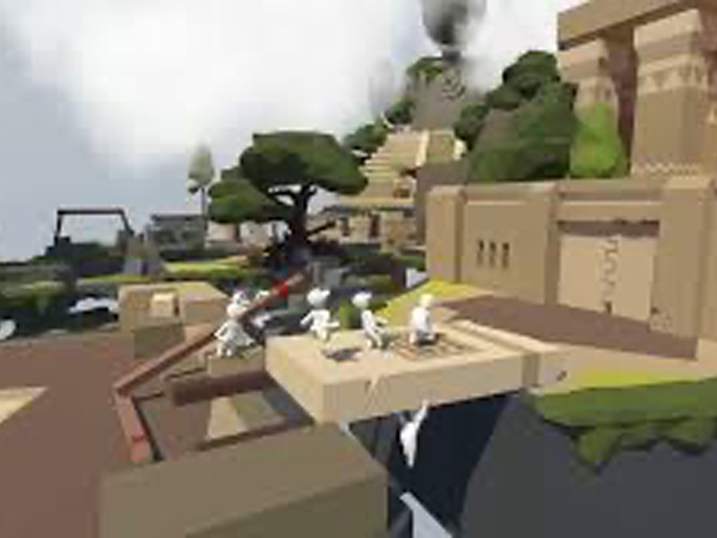
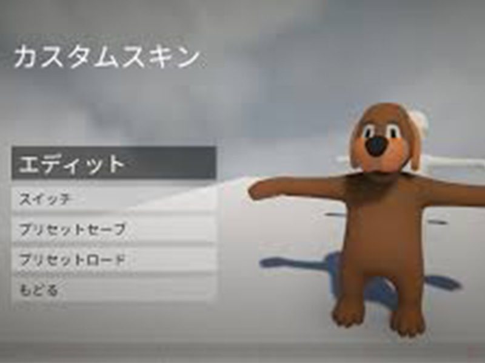
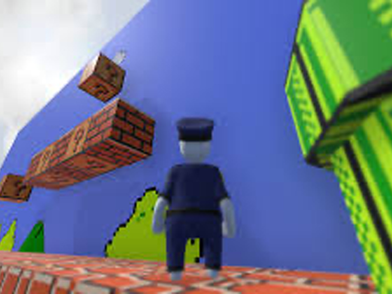

humanfallflat
- 配信日:
- 対応機種:PC,swich
- 定価:1200円
- ジャンル:アクション
- タグ:#バカゲー#pcゲーム#家庭用ゲーム#有料ゲーム#アクション
箱庭世界にあるオブジェクトを動かして
ステージクリアを目指すパズルアクションゲーム！
バカゲー要素
- バカ要素① 「へんなの」が様々なところに潜んでる
- バカ要素② 両親が息子を閉じ込めて先に脱出してしまう
- バカ要素③ へんなのが姿を変えて爆破してくる
ゲーム概要
夢の中に入り込んだ主人公のボブはぐにゃぐにゃした粘土のような体になっており、
うまく力が入らながらも箱庭世界にある大きなオブジェクトを動かしてステージを進んで行く。
ふにゃふにゃした人形のようなかわいいキャラクターを操作して、オブジェクトを掴んだり、押したり、引いたり、
運んだり、たまには仲間を落としたり、目の前にあるアイテムを使い、動かし、様々な物理パズルを解いてステージをクリアする、
オープンワールドアクションパズルゲームです。また、最大8人でローカル通信･インターネット通信プレイを楽しむことができます。
さらにステージ作成もでき、自分の作ったステージを他のプレイヤーに遊んでもらうこともできる。
プレイ動画ここらかはネタバレ注意
5分でわかるプレイ動画はこちら
ゲームがほぼわかるプレイ動画はこちら
プレイ感想
ヒューマンフォールフラットを実際にプレイしてみて思ったのはまず操作が難しいと言うところで
体がふにゃふにゃしていて動きにキレがないというのもあってしっかりアクションができません。
基本的に体はAWSDキーで操作してマウスで手とカメラを操作するので初心者の人には厳しいとまず思いました。
あと基本的にステージは謎解きもあるがほぼほぼアスレチックでできているので１回落ちてしまうとその後の復帰するまでの時間がすごくだるいです。
しかしこのゲームの最も大きい特徴は複数人でプレイすると言うところです。
1人は謎を解いて道を切り開いて後のもう1人がアスレチックをクリアしてステージをクリアすると言うことがすごく多く協力が物を言うゲームとなっていて、
ステージの数が多くプレイ時間がとても多いため、やっていると時間を忘れそうになる位面白いです。また実際にステージを作ることができるので、
自分がステージを作ってその作ったのを友人にやらせると言うのもできます。
また、作った人が一般の人に公開することができるので個性的なステージが揃っていますのでやってみたいステージを探してプレイしてはいかがでしょうか。
最後に実際にプレイした動画が上にあるので見て下さい。